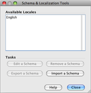
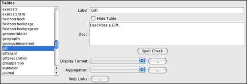
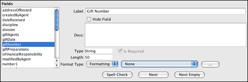

Editing the Schema Configuration
Schema refers to the many tables and fields that systematize the many dimensions and
relationships of the data within biological collections. The Schema Configuration module is a
highly functional, though somewhat complex, set of tools created to configure the Specify
schema for individual discipline needs. Changes made in the Schema Configuration tool will
affect all collections within a discipline and can be used to individualize Specify for each
discipline.
Changes made within the Schema Configuration tool affect some very sensitive areas of the
database and may require the Specify application to shut down. For this reason, all tabs must
be closed before the tool will open, and when changes are saved within the Schema
Configuration tool the Specify application will shut down. You
will be prompted to save all changes within any open tabs before opening the Schema
Configuration tool.
The tools in the Schema Configuration provide the following functions:
-
Change the captions, or display names, of tables and fields in Specify. These are displayed
on forms and in searches. The names in the database are not editable, but the captions can
be edited.
- Hide unused tables or fields from the query tool. Hidden tables and fields will not be
hidden on the forms.
-
Edit descriptions (usage notes) for tables and fields. These can be viewed from within a
form by double-clicking on the caption.
-
Create a format for a table. This allows one or more fields to represent a table in a
search result. For example, an Agent is sometimes represented by the last name and first
name fields, separated by a comma.
-
Create or edit an aggregatation for a table. A related table with a one-to-many
relationship to the primary table combines records into a single record typically separated
by semi colons.
-
Designate a field as being required. This is reflected on forms and in the WorkBench
uploader. A record can not be saved unless all required fields containing data.
-
Format a field as a pick list, weblink or field format.
Open Schema Configuration
1. Close all tabs and save any changes before opening Schema Configuration (you will be
prompted). Open Schema Configuration by clicking System > Schema Configuration.
The Schema Configuration tool (and menu) is only available to users in a Manager or
Administrators group.

Open Schema Configuration
2. In the resulting dialog choose English in the Available Locales. The 6.3 release of
Specify has been translated into Portugese. To use the Portugese version of Specify please contact Specify at specify@ku.edu. Because the Specify
project is Open Source, any third parties that are interested in translating Specify can
easily do so, but are required to send the changes to the Specify project. If you are
interested in translating Specify please contact the Specify Project at specify@ku.edu.
3. Next, click the Edit a Schema button in the Tasks section of the dialog. Future
releases of Specify will allow schemas to be both imported and exported. This would allow
communities to share common schema configurations. A collection manager who has both the
schema configuration and the forms changed to manage their discipline could share both with
the entire community, allowing all Collection Managers to have the exact same set-up for
their collection data.

Schema Configuration Tool
The Schema Configuration tool opens with the schema listed on the left side and the tools on
the right. The top left pane titled 'Tables' lists all the tables in the Specify schema. The
bottom left pane titled 'Fields' lists the fields for each table. Click a table to display
the available fields. Many of the fields listed are related fields, which belong to other
tables. This will be discussed in more detail later.
The available tools for the Tables are listed on the top right and the tools for Fields are
listed on the bottom right.
Common Tools
The following tools within the Schema Configuration interact the same for both tables and fields.
Change a Caption for a Table or
Field
The first tool is Caption and is available for both Tables and Fields. Simply
select a table or field from the appropriate list and type the new name into the
Caption field. The new caption will appear on forms, in the list of Query Creators
and the Simple Search Configuration tool.
Note: Only fields that are included on existing forms will reflect
these caption changes.
Hide Unused Tables and/or Fields
Tables and fields that are not used by a particular discipline can be hidden. This will
remove them from the Query Creators list and Simple Search Configuration choices. This will
not remove fields from forms. Data can still be added to the forms in the hidden field and
will be saved in the database. This tool is mainly used to simplify the lists presented for
creating queries and simple searches by removing fields that are not used. The hidden tables
and fields will not be removed from previously saved queries or reports.
Tables will not be removed from any side bar configurations. To remove tables from the side
bar click Tabs > Configure Side Bar, then select the name from the list and click
the  (delete)
button.
(delete)
button.
Edit Table / Field
Description (Usage Notes)
Both the Tables and Fields have a description. This is useful when describing how fields and
tables are used within individual disciplines. This is an editable field. These can be viewed
as usage notes in a form by double clicking on a field caption.
Table Tools
Tools for tables are available on the top section of the Schema Configuration tool. The following tools are available for tables only.

Table section of the Schema Configuration tool
Format a Table
Tables can be represented in search results and in reports by one or several fields within
the table. Most tables are represented by only one field, (Collection Object shows the
Catalog Number), but some are best represented by more than one field (Agent may be formatted
to display Last Name, First Name, Middle Initial).
It is important to note that Preferred Taxon, Geography, Chronostratigraphy and
Lithostratigraphy fields use the full name as their format. This is configured in the tree
definition.
Open the Table Formatting Editor by first choosing a table to format from the Tables list,
then clicking the ... (dialog) button next to the Table Format field.
The initial dialog screen displays a list of saved table formats for editing purposes.

Available Table Formats
Buttons at the bottom of the dialog offer the following:
 (checkmark) selects the saved
format as the default, which will be used by the application.
(checkmark) selects the saved
format as the default, which will be used by the application.
 (edit) opens the format
editor for editing a saved format.
(edit) opens the format
editor for editing a saved format. - (delete) removes the format.
 (add) opens the format editor for
creating a new format.
(add) opens the format editor for
creating a new format.
Clicking the or
button opens the Table
Format Editor dialog.

Table Format Editor
- Name is used when storing the format in the database. This name should be
short.
- Title is the name of the format and will appear in any table format lists
(in the first format editor dialog and the Display Format Pick List). This will link to the
shorter name in the database and can be more descriptive.
There are two types of Table Formats, a 'Single display format' that links to one or more
fields and a 'Display depends on value of field', which allows for different formats based on
the value in a conditional field.
Single table
format
The Single display format allows users to select fields from the Available Fields window to
be used in the table format.
-
First, click the Single table format button.
- Next, select a field from the Available Fields window by either double
clicking on a field or selecting the field and clicking the Add Field button. The
Available Fields lists related tables and their fields. Simply click on the file folder of
a related table to display the available fields for the table.
- Then select a Separator. These can be any character.
Display depends on value of field:
This type of format is useful when the data in one field sets a condition for another field.
A good example is a Current Determination in Ichthyology. A Collection Object can have many
Determinations, but only one can be marked as Current. Rather than displaying all
Determinations the table can be formatted to display only the Current Determination.
First choose the 'Display depends on value of field' button.
The window will change to include a Field Value and Display Format.
Then choose a conditional field by clicking the  button on the Pick List and choosing a field
from the list.
button on the Pick List and choosing a field
from the list.
Next, click the (add) button at the
bottom of the dialog. A ... (dialog) button will appear in the window.
Click the ... (dialog) button. The Format Editor described above will appear.
-
Select a Separator. This can be any character.
- Next, select a field from the Available Fields window by either double
clicking on a field or selecting the field and clicking the Add Field button. The
Available Fields lists related tables and their fields. Simply click on the file folder of
a related table to display the available fields for the table.
- Once the Display Format has been saved, type the Field Value into the box. These will vary
depending on the table and fields for the format. In the above example the Field Value for
Current would be true and false. The Field Value can also be set to the
Value of fields in a Pick List (a good example of this is Agent).
Once a Table Format has been created it will need to be selected from the pick list next to
the Display Format caption.

Choose a Table Format
Aggregate a Table
Tables with a one-to-many relationship to the primary table could potentially link multiple
records to the primary table. The only method of displaying these in a single line (e.g. for
results or reports) is to aggregate them. Aggregating the related table will use the table
format for each individual record and group them together into one record using a separator
of your choosing. For example, a Collection Object can have many Preparations. The results of
a query on Collection Objects containing any field in the Preparation table (for Collection
objects with multiple Preparations) will return multiple rows for that Collection Object.
However; selecting the aggregated and formatted table name in the query tool will return a
single record with the Preparation information formatted and aggregated into a single string.
Open the Aggregation Editor by first choosing a table to aggregate from the Tables list,
then clicking the ... (dialog) button next to the Aggregation field.
The initial dialog displays any saved aggregation formats for editing and selection of the
default format.

Available Table Aggregations
Buttons at the bottom of the dialog offer the following:
- (checkmark) selects
the saved aggregation as the default, which will be used by the application.
- (edit) opens
the aggregation editor for editing a saved aggregation.
- (delete) removes
the aggregation.
- (add) opens the
aggregation editor for creating a new aggregation.
Clicking the (edit) or (add) button opens the following editor dialog.

Table Aggregation Editor
Table lists the name of the table being aggregated.
- Name is used when storing the aggregation in the database. This should be
short so as not to take up too much space.
- Title is the name of the aggregation and will appear in any aggregation
format lists (in the first aggregation editor dialog and the Aggregation Pick List). This
will link to the shorter name in the database, allowing the title to be more descriptive.
- Display offers a Pick List of formats for the table. The ... (dialog)
button opens the Format Editor for creating a new format or editing an old one.
- Separator refers to the character that will separate the individual
records from one another.
- Count refers to the number of records you wish to display. The limit is
10.
- Ending is required when choosing a Count. It is a text field for typing in
the words that will be placed at the end of the record to indicate that more records are
present but are not being displayed. Examples include et al, &, etc.
- Sort by offers a Pick List of fields in the table for sorting the returns.
Once the Aggregation has been created, it will need to be selected from the Aggregation pick
list next to the Aggregation caption.

Choose an Aggregation
Web Links
At this time web links that are configured in the Schema Configuration also need to be added
to individual forms by exporting the form set and editing the xml file for the form. Please
refer to Web Links.
Field Tools

Field section of the Schema Configuration tool
Fields have several properties that tables do not.
- Type indicates the type of field and is not user editable.
- Length indicates the length of the field. This can be useful to indicate
how much text can be added to a particular string or text field.
- Is Required refers to the required fields on forms. When entering data into
a form with required fields the form changes can not be saved until all the required fields
contain data. Any system required fields can not be edited. Other fields can be changed.
- Field Format Type offers choices for altering string fields into either a
Formatted (described below), Pick List or Web Link.
At this time User-Defined Pick Lists that are configured in the Schema Configuration also
need to be added to individual forms by exporting the form set and editing the xml file for
the form. Please refer to User-Defined Pick List.
System Pick Lists are already included in the Specify forms and can be edited. Please refer
to System Pick Lists.
Creating a Formatted Field and editing an existing System Pick List will immediately be
reflected within other Specify modules, such as queries and forms which include the edited
field.
New, or User Defined Pick Lists and Web Links will not be automatically reflected within the
forms in Specify. The User Defined Pick List and Web Links must be configured in the Web
Links or Pick List editors. Forms will then need to be exported, edited in XML to include the
Pick List and Web Link, then imported back into Specify. Please refer to Import/Export Forms for more details.
Format a Field
Overview
Accession and Catalog Number formats are configured during the institution setup, but users
may have other fields that require either a number scheme or a format. A format allows a
field to include various data components, such as static text, a date or an incremented
number. Gift Number and Loan Number often have a unique format within collections. These can
be formatted in the Schema Configuration tool, which will change the format for the entire
discipline. In other words, if a Gift Number is formatted in the schema configuration all the
collections within the discipline will be required to use the new format, which will display
on the Gift form.
Catalog and Accession Numbers may not be edited in the Schema Configuration tool. At this
time they may not be edited once they have been created. Field Formats that are created in
the Schema Configuration tool may NOT be edited once data resides in the database.
Field Formats can not be changed if data exists within the database in the format. In other
words, before changing a field format all data using the old format must first be deleted.
Field formatting functions are configured using the Format Type section at the bottom of the
Schema Configuration tool.
Choose Formatted from the pick list next to the Format Type caption.

Format Type
If a format exists choose it from the
middle drop-down list.

List of existing Field Formats
Actions
1. Click the ... button to open the initial Field Formatting Editor.

Available Field Formats
Buttons at the bottom of the dialog offer the following:
- (checkmark) selects
the saved format as the default, which will be used by the application.
- (edit) opens
the Field Formatting Editor for editing a saved format.
- (delete) removes
the format.
- (add) opens the Field
Formatting Editor for creating a new format.
Clicking the (edit) or (add) button opens the following editor dialog.

Field Formatting Editor
The table, field and field length information is displayed on the top left.
- Name is used within the application files. It should be text only and will
not be displayed to the user anywhere else in the application.
- Title will be displayed in any application format lists that are presented
to the user.
- Reset Counter Every Year will become enabled when a Numeric section that
'Is Incremented' as well as a 'Year' are included in the format (this is explained in more
detail in the following text). Checking this box will start a new count each year.
A format can be made up of one or many sections. Begin creating a format by clicking the(add) button on the right side of
the editor to add a section.
2. Choose the type of section to add.

Choose a Type
- Numeric consists of numbers only and can be auto incremented by checking
the 'Is Incrementer' box and using Auto Numbering when entering data. Specify will increment
from the highest number present in the database. The length of the section can be set between
1 and 10 characters. For formats which also include a year, the number can restart the count
every year by clicking the Restart counter every year box.
- It is important to remember that field formats are implemented at a Discipline level and
that formats that include a section that is incremented will include a numbering scheme that
is shared by all Collections within the Discipline.
- Alphanumeric can contain both characters a through z and
numbers. A field will appear which allows the section to be set between 1 and 10 characters
in length.
- Alpha may only be alphabetical characters a through z. A
length field will appear which allows the section to be set between 1 and 10 characters in
length.
- Separator refers to a character that separates the various sections.
Separator choices include - . / ' '(space) _ and are one character in length.
- Year will add the year on the format. The current year will automatically
be entered into this field on the form, but can be edited.
- Any char(acter) allows any keyboard character. A field will appear which
allows the length to be set between 1 and 10 characters.
- Constant refers to any section that will remain constant and is not
editable on a form. This section is useful for an institutional code. Type the characters for
the constant in the field labeled Text located under the Type box. The
length of the Constant section is only limited by the number of characters remaining in the
50 character field length.
3. Fill in the remaining information for the chosen section.
4. Once the section is configured correctly add it to the format by clicking the  button.
button.
The section will appear in the window with the appropriate information in each of the
columns.
- Type refers to the Type of section that was chosen from the pick list.
- Value shows the character used to represent the segment in the Sample at
the bottom of the window.
- Size refers to the number of characters chosen for the section. This is not
applicable to the Separator or Year section types.
- Is By Year refers only to the Year but also allows incremented numeric
sections to be renumbered every year.
- Is Incrementer refers only to the Numeric section type that is incremented.
5. Reorder sections by clicking the  (reorder up) and
(reorder up) and  (reorder down) buttons on the
right side of the editor.
(reorder down) buttons on the
right side of the editor.
6. Delete unwanted sections by clicking the (delete) button.
7. Continue adding sections until the format is complete and displays correctly in the
Sample window at the bottom of the editor.
Note: For data entry purposes, when manually entering a formatted
number field, it is paramount that numbers be padded with 0's. For example, if 3 numbers are
available in a numbering scheme (###) and the desired number is 1, then 001 must be entered.
If only 1 is entered, then Specify will read this as 100. This will produce incorrect results
in searches, queries and reports.
8. Choose a Field Format
Once a field format has been configured it will need to be selected from the center pick
list on the main Schema Configuration window.

Choose a Format